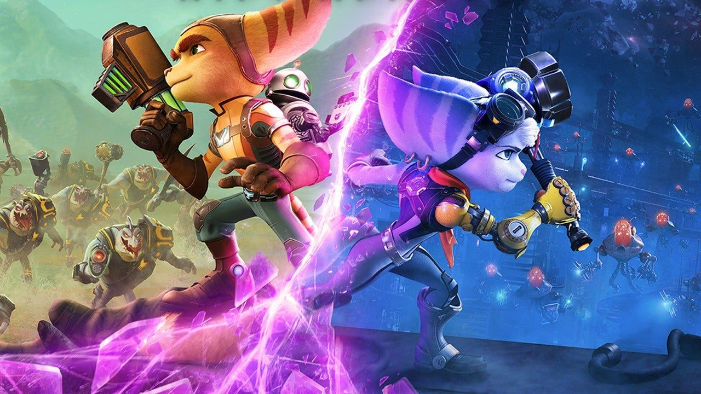

ratchet and clank has 17 games across PlayStation 2,3,4,5,PlayStation Vita and PlayStation Portabl
The games take place in a science fiction setting and follow the adventures of Ratchet (a feline humanoid known as a Lombax, who is a mechanic) and Clank (a diminutive, sentient Zoni "defective" robot) as they travel through the universe, saving it from evil forces that consistently threaten it. The series is noted for its inclusion of many exotic, unique and over-the-top weapons and gadgets, a concept that Insomniac Games has expanded into their other games.
Ratchet and Clank are two of the most critically acclaimed gaming teams of the 21st Century, alongside rival games Jak and Daxter. Bursting onto the single player platform gaming scene in 2002, the Insomniac gaming company brought us an unlikely mechanic and his robot sidekick, all in the science fiction genre..